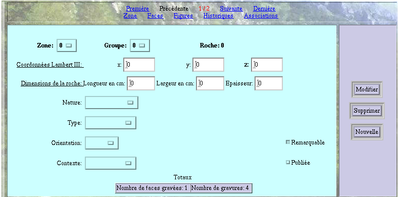

VI- LES ECRANS
3- L'écran Roches
Cet écran permet de saisir toutes les informations relatives aux roches.
 CHAMPS
OBLIGATOIRES:
Les seuls champs obligatoires pour la saisie
sont les champs Zone, Groupe et Roche qui constituent la clef primaire
de la table Roche.
CHAMPS
OBLIGATOIRES:
Les seuls champs obligatoires pour la saisie
sont les champs Zone, Groupe et Roche qui constituent la clef primaire
de la table Roche.
 LE
TABLEAU TOTAUX:
il n'apparait qu'en sortie, une fois que la saisie/recherche
a été réalisée. Les comptes s'effectuent
automatiquement
en fonction des informations saisies dans les tables Face et Figure.
LE
TABLEAU TOTAUX:
il n'apparait qu'en sortie, une fois que la saisie/recherche
a été réalisée. Les comptes s'effectuent
automatiquement
en fonction des informations saisies dans les tables Face et Figure.
